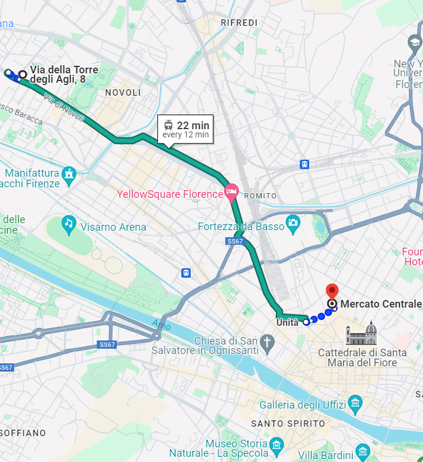
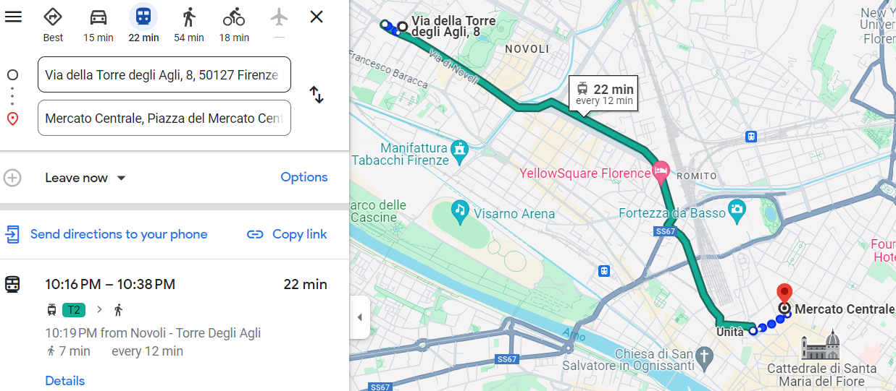

Typical products and restaurants
Florence is a city rich in culinary traditions. From typical dishes to recommended restaurants,
here you will find a brief guide to the best of the local gastronomy.
Bistecca alla Fiorentina
- A special icon of Florence, Bistecca alla Fiorentina is a succulent beef steak, expertly grilled.
This cut of meat, thick and flavorful, is generally served rare to retain all its juiciness.
It is a must for any meat lover visiting Florence.
Schiacciata
- Schiacciata is a typical Tuscan bread, crunchy on the outside and soft on the inside.
Perfect for stuffing with cold cuts, cheeses, or vegetables, it is an ideal choice for a quick and tasty snack.
You can find it in many local bakeries, freshly baked and still warm.
Lampredotto
- Lampredotto is a typical Florentine street food dish, prepared with a part of the cow's stomach.
Served in a sandwich and seasoned with green sauce or spicy sauce, it is a unique culinary experience not to be missed.
You will find it in traditional street food trucks in some squares and streets of Florence.
Ribollita
- Ribollita is a rustic soup typical of Tuscan cuisine, made with stale bread, beans, and vegetables.
This dish, with its rich and comforting flavor, represents the simplicity and genuineness of the Tuscan peasant tradition.
Perfect for warming up during the winter months.
Wine
- Tuscany is famous for its fine wines such as Chianti, Brunello di Montalcino, and Vino Nobile di Montepulciano.
These wines, with their unique and complex character, are the perfect accompaniment for traditional Tuscan dishes.
Vin Santo
- Vin Santo is a typical Tuscan dessert wine, sweet and aromatic, often served with cantucci, the traditional almond biscuits.
This pairing represents the perfect closure for a typical Tuscan meal.
Central Market (Mercato Centrale)
- The Central Market is a lively covered market in the heart of Florence.
Here you can find fresh local products, cheeses, cold cuts, and a variety of typical Tuscan specialties.
Additionally, the market offers numerous food stalls where you can savor traditional dishes prepared on the spot.


Diladdarno restaurant
- Ristorante Diladdarno, located in the Oltrarno area, offers an authentic culinary experience with typical Florentine traditional dishes.
With a cozy atmosphere and friendly service, it is the ideal place to enjoy a quiet and delicious meal after a day of exploration.
Ristorante Diladdarno
Ristorante Banco a Ristoro
- If you have a car and want to explore the surrounding areas of Florence,
Ristorante Banco a Ristoro, located just outside Florence, in Molino del Piano,
offers innovative cuisine that enhances fresh and high-quality traditional ingredients.
Enrich your experience by visiting nearby places of interest,
such as the suggestive Castello del Trebbio, the characteristic Mulino a Vento di Monterifrassine, and the renowned Castello di Nipozzano.
These locations are famous for their beautiful landscapes, historical significance,
and production of excellent wines and products.
Ristorante Banco a Ristoro
Local Festivals (Sagre)
- If you have a car and want to explore the surrounding areas of Florence,
participating in typical festive gatherings of Tuscan towns,
the festivals offer a perfect opportunity. These seasonal traditional festivals, locally known as Sagra,
celebrate local products such as truffles, game meat, olive oil, and many other typical dishes and products.
They offer a unique chance to taste regional specialties in a festive atmosphere,
with events varying throughout the year in different locations of Tuscany and the province of Florence.
Discover local festivals on these sites:
- Festivals in the province of Florence
- Festivals Firenze Today
Notes